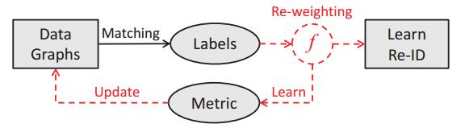
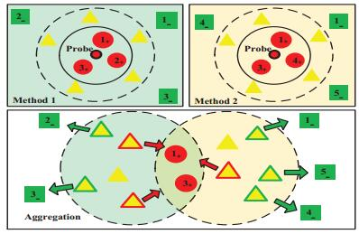
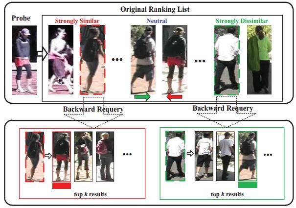
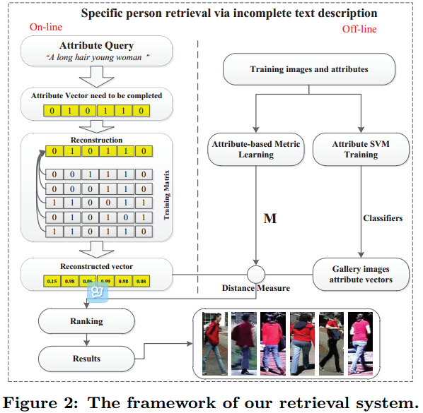
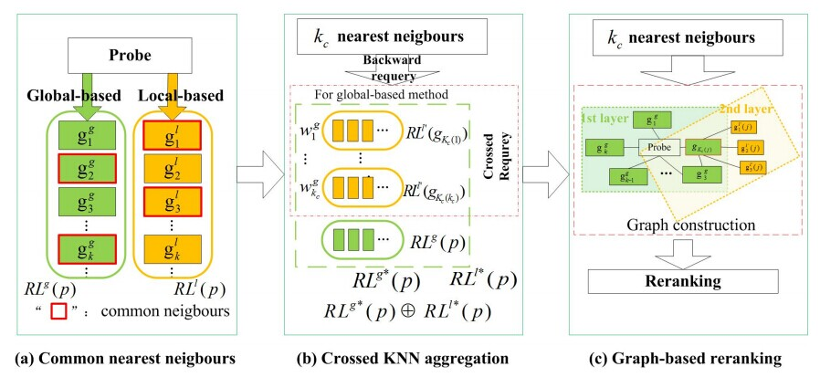
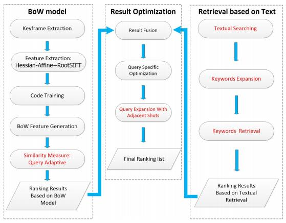
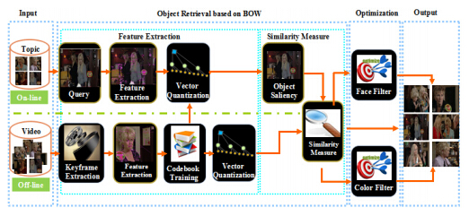

Mang Ye 叶 茫 PhD Student, HKBU
|
News
-
2019.02, A survey of open-word person re-identification. Link.
-
2018.05, We have released the code of visible-thermal (cross-modality) person re-identification in AAAI 2018 and IJCAI 2018. Code.
-
2017.09, We have released the code of unsupervised video person re-identification in ICCV 2017. Code.
-
2017.05, A comprehensive overview of Re-id sources. Provided by Dr. Zheng Wang. Updated !
Biography
-
2016-present, Ph.D student, Department of Computer Science, Hong Kong Baptist University.
-
2018.07-2018.12, Visiting scholar at Columbia University working with Shih-Fu Chang.
-
2013-2016, MSc, MAP Group supervised by Chao Liang and Jun Chen in NERCMS, Wuhan University.
-
2009-2013, B.E., Electronic Information Engineering, Wuhan University, China.
-
My research interests include computer vision and multimedia analysis, particularly person re-identification and instance retrieval in videos.
Selected Publications
-
Unsupervised Embedding Learning via Invariant and Spreading Instance Feature
Mang Ye, Xu Zhang, Pong C. Yuen, Shih-Fu Chang.
IEEE International Conference on Computer Vision and Pattern Recognition (CVPR), 2019.
[ PDF ] [ Bibtex] [ Code ] [ arXiv ]@inproceedings{cvpr19unsupervised, title={Unsupervised Embedding Learning via Invariant and Spreading Instance Feature}, author={Ye, Mang and Zhang, Xu and Yuen, Pong C. and Chang, Shih-Fu}, booktitle={IEEE International Conference on Computer Vision and Pattern Recognition (CVPR)}, year={2019}, }
-
Dynamic Graph Co-Matching for Unsupervised Video-based Person Re-Identification
Mang Ye, Jiawei Li, Andy J Ma, Liang Zheng, Pong C. Yuen.
IEEE Transactions on Image Processing (TIP), 2019.
[ PDF ] [ Bibtex] It's an extended version of our ICCV 17 paper.@article{tip19dgm, title={Dynamic Graph Co-Matching for Unsupervised Video-based Person Re-Identification}, author={Ye, Mang and Li, Jiawei and Ma, Andy J and Zheng, Liang and Yuen, Pong C}, journal={IEEE Transactions on Image Processing (TIP)}, year={2019}, publisher={IEEE} }
-
Bi-directional Center-Constrained Top-Ranking for Visible Thermal Person Re-Identification
Mang Ye, Xiangyuan Lan, Zheng Wang, Pong C. Yuen.
IEEE Transactions on Information Forensics and Security (TIFS), 2019.
[ PDF ] [ Bibtex] It's an extended version of our IJCAI 18 paper.@article{tifs19vtreid, title={Bi-directional Center-Constrained Top-Ranking for Visible Thermal Person Re-Identification}, author={Ye, Mang and Lan, Xiangyuan and Wang, Zheng and Yuen, Pong C}, journal={IEEE Transactions on Information Forensics and Security (TIFS)}, year={2019}, publisher={IEEE} }
-
A Survey of Open-World Person Re-identification
Qingming Leng, Mang Ye, Qi Tian.
IEEE Transactions on Circuits and Systems for Video Technology (TCSVT), 2019.
[ PDF ] [ Bibtex]@article{tcsvt19survey, title={A Survey of Open-World Person Re-identification}, author={Leng, Qingming and Ye, Mang and Tian, Qi}, journal={IEEE Transactions on Circuits and Systems for Video Technology}, year={2019}, publisher={IEEE} }
-
Robust Anchor Embedding for Unsupervised Video Person Re-Identification in the Wild
Mang Ye, Xiangyuan Lan, Pong C. Yuen.
European Conference on Computer Vision (ECCV), 2018.
[ PDF ] [ Abstract] [ Bibtex]This paper addresses the scalability and robustness issues of estimating labels from imbalanced unlabeled data for unsupervised video-based person re-identification (re-ID). To achieve it, we propose a novel Robust AnChor Embedding (RACE) framework via deep feature representation learning for large-scale unsupervised video re-ID. Within this framework, anchor sequences representing different persons are firstly selected to formulate an anchor graph which also initializes the CNN model to get discriminative feature representations for later label estimation. To accurately estimate labels from unlabeled sequences with noisy frames, robust anchor embedding is introduced based on the regularized affine hull. Efficiency is ensured with $k$NN anchors embedding instead of the whole anchor set under manifold assumptions. After that, a robust and efficient top-$k$ counts label prediction strategy is proposed to predict the labels of unlabeled image sequences. With the newly estimated labeled sequences, the unified anchor embedding framework enables the feature learning process to be further facilitated. Extensive experimental results on the large-scale dataset show that the proposed method outperforms existing unsupervised video re-ID methods.
@inproceedings{eccv18race, title={Robust Anchor Embedding for Unsupervised Video Person Re-Identification in the Wild}, author={Ye, Mang and Lan, Xiangyuan and Yuen, Pong C.}, booktitle={ECCV}, year={2018}, }
-
Visible Thermal Person Re-Identification via Dual-Constrained Top-Ranking
Mang Ye, Zheng Wang, Xiangyuan Lan, Pong C. Yuen.
27th International Joint Conference on Artificial Intelligence (IJCAI), 2018.
[ PDF ] [ Abstract] [ Bibtex] [ Code ]Cross-modality person re-identification between the thermal and visible domains is extremely important for night-time surveillance applications. Existing works in this filed mainly focus on learning sharable feature representations to handle the cross-modality discrepancies. However, besides the cross-modality discrepancy caused by different camera spectrums, visible thermal person re-identification also suffers from large cross-modality and intra-modality variations caused by different camera views and human poses. In this paper, we propose a dual-path network with a novel bi-directional dual-constrained top-ranking loss to learn discriminative feature representations. It is advantageous in two aspects: 1) end-to-end feature learning directly from the data without extra metric learning steps, 2) it simultaneously handles the cross-modality and intra-modality variations to ensure the discriminability of the learnt representations. Meanwhile, identity loss is further incorporated to model the identity-specific information to handle large intra-class variations. Extensive experiments on two datasets demonstrate the superior performance compared to the state-of-the-arts.
@inproceedings{ijcai18vtreid, title={Visible Thermal Person Re-Identification via Dual-Constrained Top-Ranking}, author={Ye, Mang and Wang, Zheng and Lan, Xiangyuan and Yuen, Pong C.}, booktitle={IJCAI}, year={2018}, }
-
Cascaded SR-GAN for Scale-Adaptive Low Resolution Person Re-identification
Zheng Wang, Mang Ye, Fan Yang, Xiang Bai, Shin’ichi Satoh.
27th International Joint Conference on Artificial Intelligence (IJCAI), 2018.
[ PDF ] [ Abstract] [ Bibtex] [ Code ]Person re-identification (REID) is an important task in video surveillance and forensics applications. Most of previous approaches are based on a key assumption that all person images have uniform and sufficiently high resolutions. Actually, various low-resolutions and scale mismatching always exist in open world REID. We name this kind of problem as Scale-Adaptive Low Resolution Person Re-identification (SALR-REID). The most intuitive way to address this problem is to increase various low-resolutions (not only low, but also with different scales) to a uniform high-resolution. SRGAN is one of the most competitive image superresolution deep networks, designed with a fixed upscaling factor. However, it is still not suitable for SALR-REID task, which requires a network not only synthesizing high-resolution images with different upscaling factors, but also extracting discriminative image feature for judging person’s identity. (1) To promote the ability of scale-adaptive upscaling, we cascade multiple SRGANs in series. (2) To supplement the ability of image feature representation, we plug-in a reidentification network. With a unified formulation, a Cascaded Super-Resolution GAN (CSRGAN) framework is proposed. Extensive evaluations on two simulated datasets and one public dataset demonstrate the advantages of our method over related state-of-the-art methods.
@inproceedings{wang2018cascaded, title={Cascaded SR-GAN for Scale-Adaptive Low Resolution Person Re-identification.}, author={Wang, Zheng and Ye, Mang and Yang, Fan and Bai, Xiang and Satoh, Shin'ichi}, booktitle={IJCAI}, year={2018} }
-
Hierarchical Discriminative Learning for Visible Thermal Person Re-Identification
Mang Ye, Xiangyuan Lan, Jiawei Li, Pong C. Yuen.
Thirty-Second AAAI Conference on Artificial Intelligence (AAAI), 2018.
[ PDF] [ Abstract] [ Bibtex] [ Code ]Person re-identification is widely studied in visible spectrum, where all the person images are captured by visible cameras. However, visible cameras may not capture valid appearance information under poor illumination conditions, e.g, at night. In this case, thermal camera is superior since it is less dependent on the lighting by using infrared light to capture the human body. To this end, this paper investigates a cross-modal re-identification problem, namely visible-thermal person re-identification (VT-REID). Existing cross-modal matching methods mainly focus on modeling the cross-modality discrepancy, while VT-REID also suffers from cross-view variations caused by different camera views. Therefore, we propose a hierarchical cross-modality matching model by jointly optimizing the modality-specific and modality-shared metrics. The modality-specific metrics transform two heterogenous modalities into a consistent space that modality-shared metric can be subsequently learnt. Meanwhile, the modality-specific metric compacts features of the same person within each modality to handle the large intra-modality intra-person variations (e.g. viewpoints, pose). Additionally, an improved two-stream CNN network is presented to learn the multi-modality sharable feature representations. Identity loss and contrastive loss are integrated to enhance the discriminability and modality-invariance with partially shared layer parameters. Extensive experiments illustrate the effectiveness and robustness of the proposed method
@inproceedings{aaai18vtreid, title={Hierarchical Discriminative Learning for Visible Thermal Person Re-Identification}, author={Ye, Mang and Lan, Xiangyuan and Li, Jiawei and Yuen, Pong C.}, booktitle={AAAI}, year={2018}, }
-
Dynamic Label Graph Matching for Unsupervised Video Re-Identification
Mang Ye, Andy J Ma, Liang Zheng, Jiawei Li, Pong C. Yuen.
IEEE International Conference on Computer Vision (ICCV), 2017.
[PDF] [Abstract] [Bibtex] [ Code ] [ arXiv ]
For updated results under standard evaluation protocol on MARS, please refer to the arXiv version and Github.
 Label estimation is an important component in an unsupervised person re-identification (re-ID) system. This paper focuses on cross-camera label estimation, which can be subsequently used in feature learning to learn robust re-ID models. Specifically, we propose to construct a graph for samples in each camera, and then graph matching scheme is introduced for cross-camera labeling association. While labels directly output from existing graph matching methods may be noisy and inaccurate due to significant crosscamera variations, this paper propose a dynamic graph matching (DGM) method. DGM iteratively updates the image graph and the label estimation process by learning a better feature space with intermediate estimated labels. DGM is advantageous in two aspects: 1) the accuracy of estimated labels is improved significantly with the iterations; 2) DGM is robust to noisy initial training data. Extensive experiments conducted on three benchmarks including the large-scale MARS dataset show that DGM yields competitive performance to fully supervised baselines, and outperforms competing unsupervised learning methods.
@inproceedings{iccv17dgm, title={Dynamic Label Graph Matching for Unsupervised Video Re-Identification}, author={Ye, Mang and Ma, Andy J and Zheng, Liang and Li, Jiawei and Yuen, Pong C.}, booktitle={ICCV}, year={2017}, }
{kind=link}
-
Person Re-identification via Ranking Aggregation of Similarity Pulling and Dissimilarity Pushing
Mang Ye, Chao Liang, Yi Yu , Zheng Wang, Qingming Leng, Chunxia Xiao , Jun Chen, Ruimin Hu.
IEEE Transactions on Multimedia (TMM), 2016.
[PDF] [Abstract] [Bibtex] [Code] [Video] Person re-identification is a key technique to match different persons observed in non-overlapping camera views. Many researchers treat it as a special object retrieval problem, where ranking optimization plays an important role. Existing ranking optimization methods mainly utilize similarity relationship between the probe and gallery images to optimize the original ranking list, but seldom consider the important dissimilarity relationship. In this paper, we propose to use both similarity and dissimilarity cues in a ranking optimization framework for person re-identification. Its core idea is that the true match should not only be similar to those strongly similar galleries of the probe, but also be dissimilar to those strongly dissimilar galleries of the probe. Furthermore, motivated by the philosophy of multiview verification, a ranking aggregation algorithm is proposed to enhance the detection of similarity and dissimilarity based on the following assumption: the true match should be similar to the probe in different baseline methods. In other words, if a gallery blue image is strongly similar to the probe in one method, while simultaneously, strongly dissimilar to the probe in another method, it will probably be a wrong match of the probe. Extensive experiments conducted on public benchmark datasets and comparisons with different baseline methods have shown the great superiority of the proposed ranking optimization method.
@inproceedings{ye2016rank, title={Person Re-identification via Ranking Aggregation of Similarity Pulling and Dissimilarity Pushing}, author={Ye, Mang and Liang, Chao and Yu, Yi and et al.}, booktitle={IEEE Transactions on Multimedia (TMM)}, year={2016}, organization={IEEE} }
{kind=link}
-
Ranking Optimization for Person Re-identification via Similarity and Dissimilarity
Mang Ye, Chao Liang, Zheng Wang, Qingming Leng, Jun Chen.
ACM international conference on Multimedia (MM), 2015.
[PDF] [Abstract] [Bibtex] Person re-identification is a key technique to match different persons observed in non-overlapping camera views. Many researchers treat it as a special object retrieval problem, where ranking optimization plays an important role. Existing ranking optimization methods utilize the similarity relationship between the probe and gallery images to optimize the original ranking list in which dissimilarity relationship is seldomly investigated. In this paper, we propose to use both similarity and dissimilarity cues in a ranking optimization framework for person re-identification. Its core idea is based on the phenomenon that the true match should not only be similar to the strong similar samples of the probe but also dissimilar to the strong dissimilar samples. Extensive experiments have shown the great superiority of the proposed ranking optimization method.
@inproceedings{ye2015ranking, title={Ranking Optimization for Person Re-identification via Similarity and Dissimilarity}, author={Ye, Mang and Liang, Chao and Wang, Zheng and Leng, Qingming and Chen, Jun}, booktitle={Proceedings of the 23rd ACM international conference on Multimedia}, pages={1239--1242}, year={2015}, organization={ACM} }
{kind=link}
-
Specific Person Retrieval via Incomplete Text Description
Mang Ye, Chao Liang, Zheng Wang, Qingming Leng, Jun Chen, Jun Liu.
International Conference on Multimedia Retrieval (ICMR), 2015.
[PDF] [Abstract] [Bibtex] Searching for specific persons from surveillance videos captured by different cameras, is a key yet under-addressed challenge in multimedia system. Related person retrieval works mainly focus on searching person by visual appearance, known as person re-identification. However, the initial visual image may not be available in some practical applications. For example, the criminal is described by a text description indirectly, “A young woman wearing a red casual with a backpack”, the traditional methods can not conquer this issue. Based on a set of pre-defined attributes that the text description query can be transformed to an attribute vector, thus can be used to retrieval in the gallery set. And yet, the user-provided attributes are sometimes incomplete. This new issue is defined as Specific Person Retrieval via Incomplete Text Description. In this paper, we conduct a specific attribute completion to enrich the original text query and generate a more expressive attribute vector. Then, a pairwise-based metric learning is introduced for completed attribute vectors. Extensive experiments conducted on two benchmark datasets have shown our superior performance.
@inproceedings{icmr_ym, title = {Specific Person Retrieval via Incomplete Text Description}, author={Ye, Mang and Chao, Liang and Zheng, Wang and et al.}, booktitle = {International Conference on Multimedia Retrieval (ICMR)}, year = {2015}, month = {June}, address = {Shanghai, China} }
{kind=link}
-
Coupled-view Based Ranking Optimization for Person Re-identification
Mang Ye, Jun Chen, Qingming Leng, Chao Liang, Zheng Wang and Kaimin Sun.
International Conference on Multimedia Modelling (MMM), 2015. Oral.
[PDF] [Abstract] [Bibtex] Person re-identification aims to match different persons observed in non-overlapping camera views. Researchers have proposed many person descriptors based on global or local descriptions, while both of them have achieved satisfying matching results, however, their ranking lists usually vary a lot for the same query person. These motivate us to investigate an approach to aggregate them to optimize the original matching results. In this paper, we proposed a coupled-view based ranking optimization method through cross KNN rank aggregation and graph-based re-ranking to revise the original ranking lists. Its core assumption is that the images of the same person should share the similar visual appearance in both global and local views. Extensive experiments on two datasets show the superiority of our proposed method with an average improvement of 20-30% over the state-of-the-art methods at CMC@1.
@inproceedings{ye2015, title = {Coupled-view Based Ranking Optimization for Person Re-identification}, author={Ye, Mang and Chen, Jun and Leng, Qingming and et al.}, booktitle = {International Conference on Multimedia Modeling (MMM)}, year = {2015}, month = {Januray}, address = {Sdyney, Australia} }
{kind=link}
- WHU-NERCMS at TREVCID 2015:Instance search task
Lei Yao, Mang Ye, Dongjing Liu, Rui Shao, Tao Liu, Jun Liu, Zheng Wang, Chao Liang.
Participant Notebook Paper , TRECVID, 2015. (Ranked 4th /31 teams)
[PDF] [Abstract] [Link] [Media Report] This paper introduces our work at the automatic instance search task of TRECVID 2015. The purpose of this task is to search specific targets in a large-scale video database. The key problems this year we are concerned about includes: 1. How to improve traditional BoW models; 2. How to improve retrieval precision with cross-mode information as an auxiliary to traditional visual features; 3. How to optimize the initial retrieval results. Correspondingly, our work is divided into three parts: First part is object retrieval with visual features based on BoW model. In this part, Bow model is augmented by Query Adaptive Similarity Measure. Second part is object retrieval with textual information. We adopt caption information and plot information of the series EastEnders in its official websites . Third part includes several fusion and optimization strategies adopted to improve the initial results. The main improvement in the strategies is Query Expansion With Adjacent Shots, which aims to retrieve more precisely in the adjacent shots of initial top-k results.
{kind=link}
-
WHU-NERCMS at TREVCID 2014:Instance search task
Mang Ye, Bingyue Huang, Lei Yao, et al.
Participant Notebook Paper , TRECVID, 2014.
[PDF] [Abstract] [Link] This paper introduces our work at the automatic instance search task of TRECVID 2014. Our work is divided into two parts: First part is object retrieval based on BOW. Specially, we extract feature histogram of frames through general BoW. We adopt similarity measure method to compare the probe and gallery shots, then we obtain the initial ranking results; Second, several optimization strategies are adopted to improve the initial results.
{kind=link}
Awards
-
2019.04, Yakun Scholarship Scheme for Mainland Postgraduate Students
-
2016-2018, Computer Science Department RPg Performance Award
-
2016-2019, Hong Kong PhD Fellowship
-
2016.01, Academic Breakthrough Prize awarded by NERCMS
-
2015.10, National Scholarship
-
2015.06, Google Excellence Scholarship
-
2014.10, National Scholarship
-
2014.08, 3rd Prize in 1st National Graduate Contest on Smart-City Technology and Creative Design
Competitions
-
2015.5-2015.8, TRECVID 2015: Instance search task. I worked as a mentor. Our final results ranked 4th over 31 participants.
-
2014.6-2014.9, Multi-camera Tracking via Person Re-identification, National Graduate Contest on Smart-City Technology and Creative Design.
-
2014.5-2014.8, TRECVID 2014: Instance search task. I worked as a group leader.
Professional Services
Invited PC Member/Reviewer for conferences:-
ICCV 2019, CVPR 2018 2019, IJCAI 2017 2018, AAAI 2018, ICPR 2018, ACCV 2018, BMVC 2019
-
IJCAI 2019 Session Chair
-
IEEE Transactions on Pattern Analysis and Machine Intelligence (TPAMI)
-
IEEE Transactions on Image Processing (TIP)
-
IEEE Transactions on Multimedia (TMM)
-
Pattern Recognition (PR)
-
IEEE Access
-
Neurocomputing (Outstanding Reviewer Award)
-
Pattern Recognition Letters (PRL) (Outstanding Reviewer Award)
Teaching Assistant
-
COMP4005, Information Systems Theory, Methodology and Architecture [2017-18 S1]
-
COMP7400, Financial Analysis and Decision Making [2016-17-18 S2]
-
COMP7800, Analytic Models in IT Management [2016-17 S1]
-
COMP2005, Business in the IT Context [2016-17 S1]